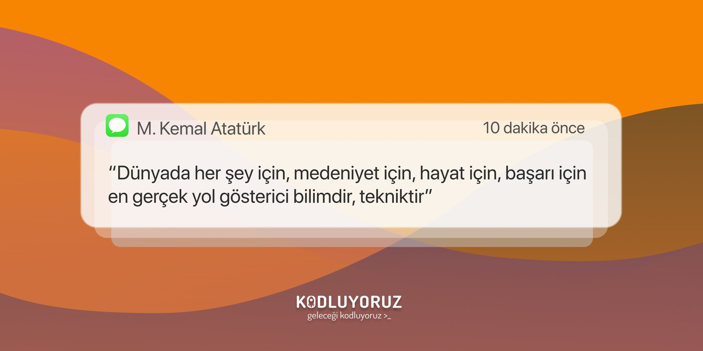
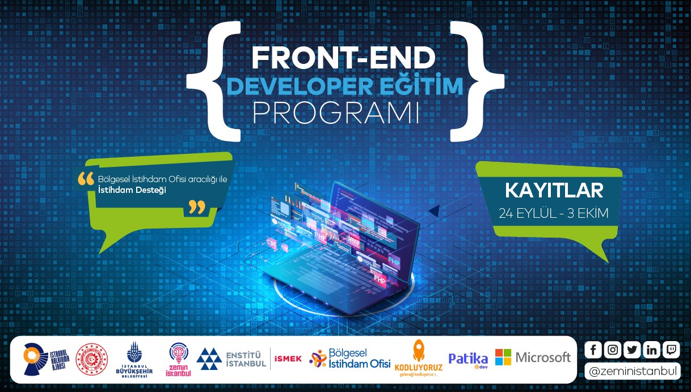

Anasayfa
Keşfet
Bildirimler
Mesajlar
Yer İşaretleri
Listeler
Profil
Daha Fazla
Anasayfa
Neler Oluyor?
reeyhanyilmaz Retweetledi
 Kodluyoruz
@kodluyoruz
. 29 Ekim
Kodluyoruz
@kodluyoruz
. 29 Ekim
Mustafa Kemal Atatürk'ün armağanı Cumhuriyetimizin 98. yılı kutlu olsun!
 20 10 5 2
PatikaDev
@patika.dev
. 20dk
@zeministanbul , @ismek_istanbul, @kodluyoruz, #patikadev ve @MicrosoftTR iş birliğiyle gerçekleştireceğimiz Front-End Developer Eğitim Programı’nı sizlerle buluşturuyoruz. Front End Developer Eğitim Programı Ön Kayıt Linki: http://link.ibb.gov.tr/RNgAlS
 5 18 21 4 GitHub
@GitHub
. 18 Ekim
GitHub
@GitHub
. 18 Ekim
Closing out Day 2 of GitHub Universe! Check it out!
7 5 150 8İlgini çekebilecek gündemler
#Turkey
21.5B Tweet
#Front-End
5B Tweet
#Kodluyoruz
1.5B Tweet
 Hakan Yalçınkaya
Hakan Yalçınkaya
 Gökhan Kandemir
Gökhan Kandemir
Hizmet Şartları .
Gizlilik Politikası .
İletişim Bilgileri . Daha fazla ...
© 2021 Twitter, Inc.